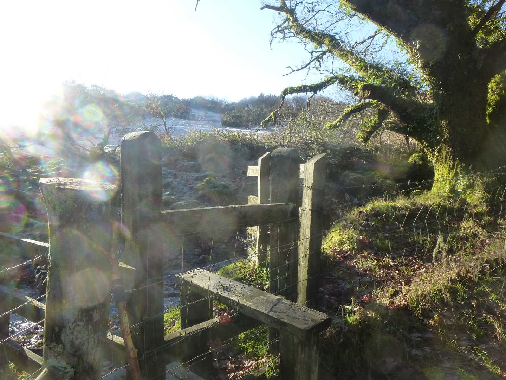

Start Ref: 454 534
End Ref: 454 534
Distance: 6 miles
Time: 3hrs
I park the car by the ford, just south of Trevage Farmhouse, and then walk back up to the farmhouse and (strange as it may seem) through their garden – to the right of the house as you look at it – and up over the granite stepping stones in the hedge. Once over the hedge, we can turn left and follow the edge of four fields before coming to a gate at the start of the fifth which leads us into a high hedged lane and into the hamlet of Tregrenna.
Turning left, we walk down the road and over the bridge. The stream that we cross over here, is the head of the River Lynher, which will cross again later, in fact we are barely a mile from its source. We continue up the hill a short distance before undertaking the most arduous section of this walk. We need to go up over the very steep stile in the hedge on our left. Once over we cross the field diagonally to our left again (it is a circular walk) and then straight through the farm that is in front of us. Here, the path is not well marked, but the lady of the farm is extremely pleasant and has always helped point us in the right direction.
Across the field and passing a new(ish) build on our right and passing a tree which has, on every occasion that I have walked this, have a pottery Mallard at its base. Just passed the tree, we tread over a little tributary and up into a small copse of trees, and follow this path back to a road. If we were to turn left here, we would pass over the ford by which we have parked (using the very lovely footbridge). However, today we are going to head off to the right and up the road for a short distance before crossing over another stile and in to a small woodland of conifer trees. At the end of the woodland, we exit over another stile, which puts us into another small stream and on a wide path which leads us along the edges of East Moor.
The path comes to an end, at a gate – one on our left and one directly ahead of us. We are going to take the gate to the left, but I marvel each time that the house in front of us is numbered 32. Where are the other 31?
Once in the field to our left we walk down and diagonally to our left, where at the foot of the field we find a wooden footbridge taking us again over the River Lynher. We are now briefly in Upton Woods, and to our right are the remains of Upton Castle. Through the gate we come into a wide field with a most gorgeous solitary Holly Tree, which we are going to pass on our left. Into the next field, we are going to walk up towards the farm, but beware the final gate can be a little boggy where all the cattle go through!
Once in the track, turn right and into the yard, where the footpath passes alongside one of the cattle barns, and then back into open field. A third of the way along the top side of this field, the path crosses into the higher field running alongside, before passing into a third field (which very often has sheep in – dog owners please be responsible) and finally out onto the road again.
From here, it is a short walk down the road (left once we get onto it) back to our car. If we haven`t already had a look, take time to cross the granite footbridge across the ford, and try to picture how the area has changed. When my family were first here (several hundred years ago) there was a mill on the lower side of the ford, there was a village green as well as the woodland.
This is a special area for me, and this walk can be done as a whole, two small circular walks or as a figure of eight if you want to mix it up. Now you are here, remember the East Moor over which we have skirted. Even on a busy bank holiday, when everyone is on North Moor and heading for Brown Willy, the East Moor can be eerily quiet if you want some solitude.
In doing this walk I always end up asking myself why is there a solitary house on the edges of the moor, with such a high house number, I also ask myself (and yet have no answer) what is the significance of the name of Upton. It appears all over Cornwall and again here. Maybe you know?
I hope that you enjoy.